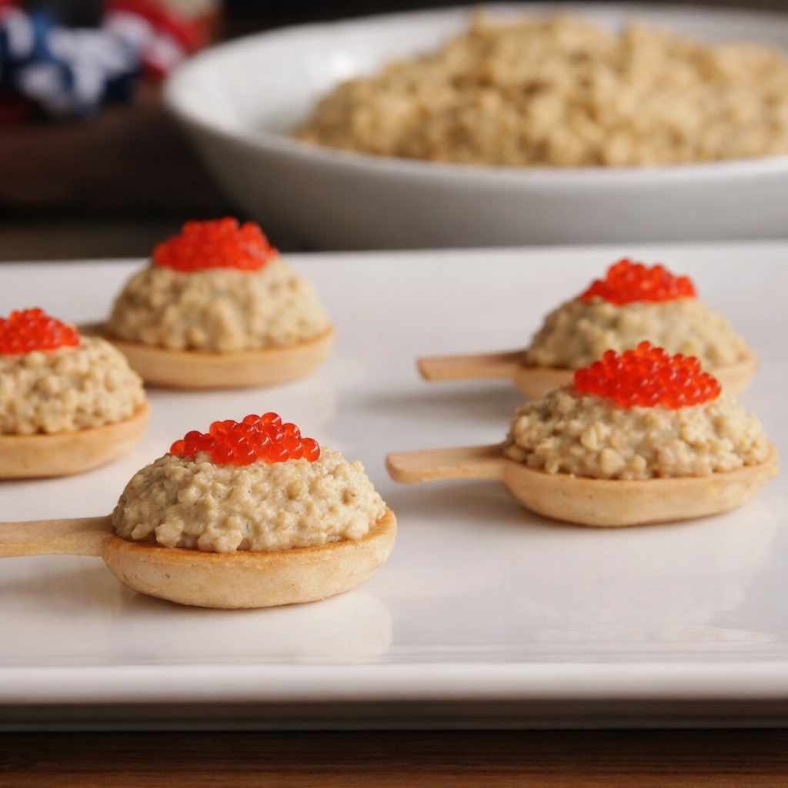
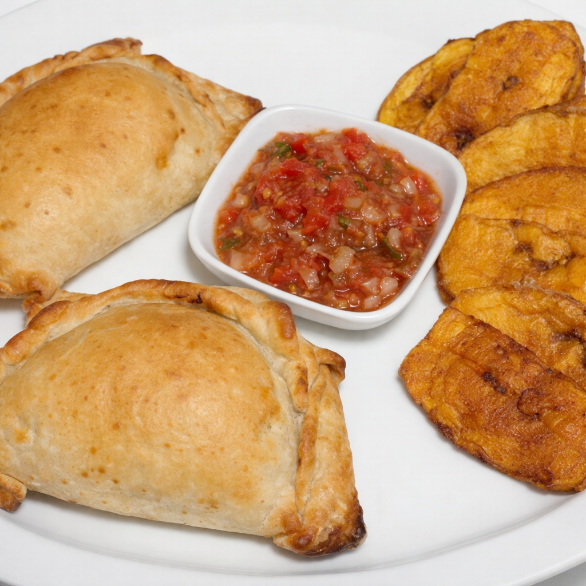
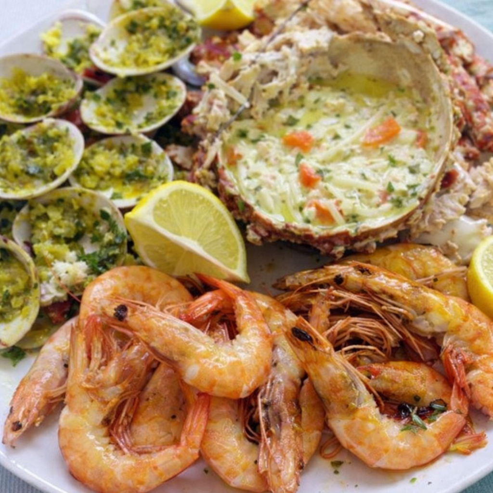
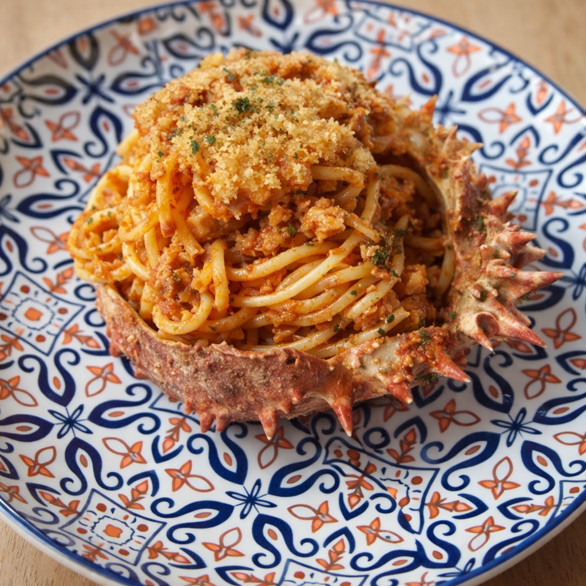
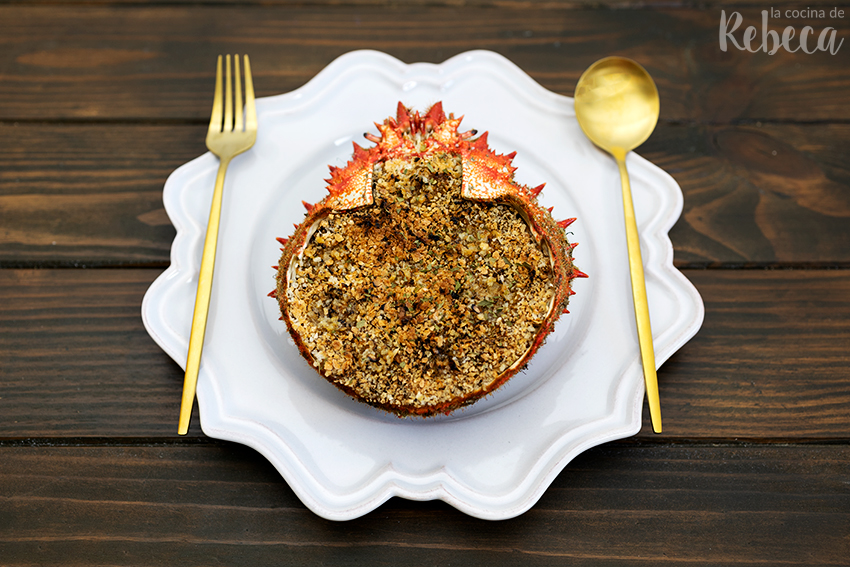
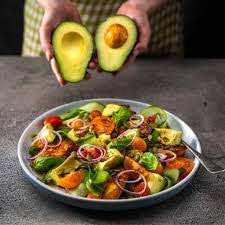
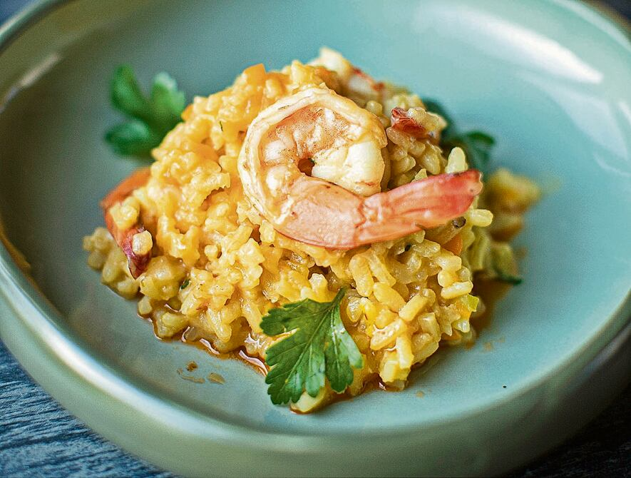
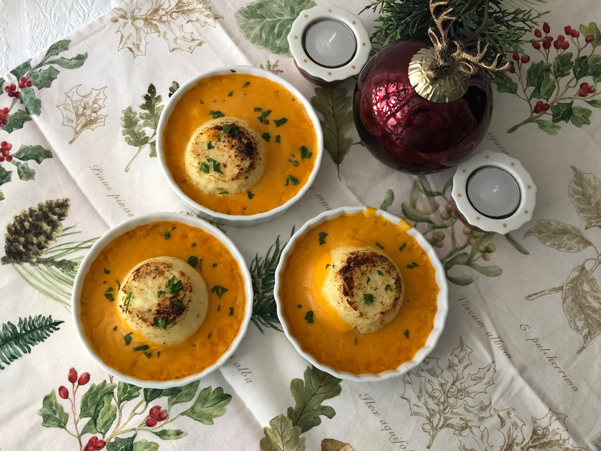

Falsa mousse centollo en cucharitas
huevas cocidas · palitos de cangrejo · mejillones al natural escurridos · berberechos al natural escurridos · mayonesa · salsa para cocinar · sal · cucharitas comestibles

Crema de centollo con crujiente de pan
centollo cocido · patatas medianas · caldo de pescado · cebolla · Manteca · Sal · Pimienta negra · crema de leche · carne extra del centollo (guardada al vaciarlo)

Paita rellena con salpicón de centollo
carne de centollo cocida · cebolla morada cortada en cuadritos · mayonesa · pimienta picada · mostaza · jalapeño picado · mayonesa a tu pedido

Empanadas de chupe de centollo con camarones
Ingredientes para el relleno: carne de centollo cocida · camarones descongelados · tomates en trozos · tocino en trozos · mantequilla de sal · cebolla cortada en cuadritos · ají

Mariscada de crustáceos y centollo rellena
centollo vivo de 1 kilo y medio aproximadamente · cangrejos frescos vivos · gamba · limones y medio mediterráneo · ajo, dos gr.grasas · perejil fresco no muy fino

Spaghetti con carne de centollo
Centollo cocido · Espaguetis · Chalota (o cebolleta) · ajo (es disfòn) · Concentrado de tomate · Brandy · Perejino · 1/4 tomates cherry (partidos por la mitad) · Aceite de oliva

Txangurro al horno (Centollo al horno)
centollo grande · cebolla · zanahoria · puerro · tomate triturado · brandy · vino blanco · aceite de oliva · pan rallado · perejil · sal · pimienta

Ensalada de centollo con aguacate
carne de centollo cocida · aguacate maduro · tomate cherry · lechuga hoja de roble · cebolleta · limón · aceite de oliva virgen extra · sal · pimienta

Risotto de centollo y azafrán
arroz arborio · carne de centollo · caldo de pescado caliente · cebolla · ajo · vino blanco seco · azafrán en hebras · mantequilla · queso parmesano · perejil

Bisque de centollo
carcasas de centollo · cebolla · zanahoria · apio · ajo · tomate · brandy · vino blanco · nata líquida · aceite · mantequilla · sal · pimienta · cayena